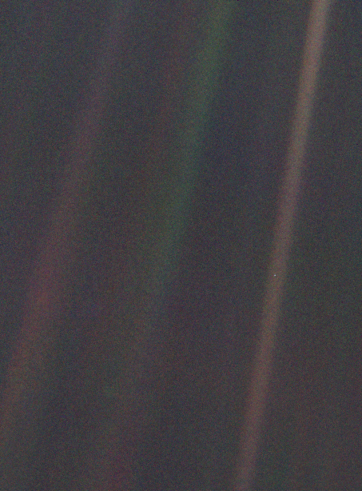
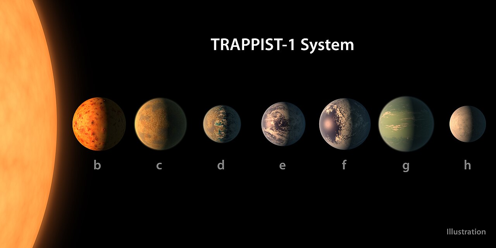
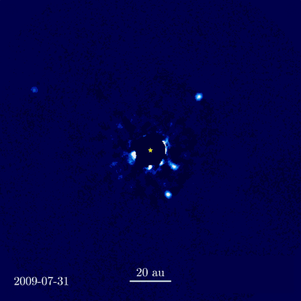

동기 유발
보이지 않는 행성을 어떻게 찾을까?
교과서 p. 34학습 목표
- 외계 행성계를 탐사하는 원리를 설명할 수 있다.
- 외계 생명체가 존재할 수 있는 조건을 알고, 외계 생명체의 존재 가능성에 대해 논증할 수 있다.

NASA/JPL-Caltech, 퍼블릭 도메인

NASA/JPL-Caltech, 퍼블릭 도메인
60억 km 밖에서 본 지구도 한 픽셀보다 작은 점이었다.
그런데 수백 광년 떨어진 별 옆의 행성을 6000개 넘게 찾아냈다. 어떻게 가능했을까?
그런데 수백 광년 떨어진 별 옆의 행성을 6000개 넘게 찾아냈다. 어떻게 가능했을까?
'행성을 직접 보지 않고, 행성이 별에 주는 영향(흔들림·가림·빛의 휨)을 본다'가 핵심입니다. 1-03의 질량 중심 시뮬레이션을 다시 보여 주며 시작하면 좋습니다. NASA 외계 행성 아카이브의 확인된 행성 수는 2025년 9월 6000개를 넘었습니다. 운영안 4차시.
핵심 개념 1
외계 행성을 찾는 네 가지 방법
교과서 p. 34 ~ 35(1) 중심별의 시선 속도 변화 · 도플러 효과
- 행성과 중심별은 공통 질량 중심을 돈다. 별이 관측자에게 다가올 때는 흡수선이 청색 편이, 멀어질 때는 적색 편이한다.
- 흡수선 파장이 주기적으로 변하면 행성이 있다. 변화 주기 = 행성의 공전 주기, 변화 폭이 클수록 행성 질량이 크고 궤도가 가깝다.
- 궤도면이 시선 방향과 나란할수록 잘 보이고, 시선에 수직(정면)이면 시선 속도 변화가 없다.
Δλλ₀ = vrc 목성이 태양을 흔드는 속도는 약 12.5 m/s, 지구는 약 0.09 m/s에 불과하다.
(2) 식현상 · 행성이 별을 가릴 때
- 행성이 별 앞을 지나면 별빛이 아주 조금 어두워진다. 밝기 감소량은 (행성 반지름 / 별 반지름)²에 비례 → 행성의 크기를 알 수 있다.
- 어두워지는 간격 = 공전 주기. 궤도면이 시선 방향과 거의 나란해야 관측된다.
- 케플러(2009 ~ 2018)와 TESS(2018 ~) 우주 망원경이 수천 개의 행성을 찾았다. 가장 많은 행성을 찾은 방법이다.
밝기 감소율 ≈ R행성²R별² 태양 앞을 지나는 목성: 약 1%, 지구: 약 0.008%
시뮬레이션 1한 행성, 두 신호: 시선 속도와 식현상 동시 관측
왼쪽 위: 옆에서 본 행성계(관측자는 아래쪽). 위 그래프: 별의 시선 속도, 아래 그래프: 별의 밝기. 경사 i = 90°는 궤도면을 정확히 옆에서 보는 경우이다. 지구 쌍둥이는 왜 찾기 어려울까?
(3) 미세 중력 렌즈 · (4) 직접 촬영
- 미세 중력 렌즈: 먼 별(광원) 앞을 다른 별(렌즈)이 지나가면 렌즈 별의 중력이 빛을 휘게 해 광원이 잠시 밝아진다. 렌즈 별에 행성이 있으면 짧은 추가 밝기 변화가 나타난다. 멀리 있거나 작은 행성도 찾을 수 있지만, 한 번만 일어나 다시 관측하기 어렵다.
- 직접 촬영: 코로나그래프로 별빛을 가리고 행성을 직접 찍는다. 별에서 멀리 떨어진, 젊고 뜨거운 거대 행성을 적외선으로 찍기 유리하다.

Jason Wang/Christian Marois (W. M. Keck Observatory), CC BY 3.0
시뮬레이션 2미세 중력 렌즈 사건의 광도 곡선
위: 하늘에서 광원(노란 점)이 렌즈 별(흰 점) 뒤를 지나가는 모습. 점선 원이 아인슈타인 고리. 아래: 관측된 밝기. 광원이 행성 근처를 지날 때 짧은 '삐죽'이 생긴다.
핵심 개념 2
외계 행성의 특징과 생명 가능 지대
교과서 p. 36 ~ 37(1) 지금까지 발견된 외계 행성
- 초기에는 별 가까이 도는 뜨거운 목성이 많이 발견되었다. 크고 가까울수록 시선 속도·식현상 신호가 커서 먼저 발견되기 때문이다(관측 선택 효과).
- 최근에는 지구보다 크고 해왕성보다 작은 슈퍼지구·미니 해왕성이 가장 흔한 것으로 밝혀졌다. 태양계에는 없는 종류이다.
(2) 생명 가능 지대와 생명체 존재 조건
- 생명 가능 지대: 중심별 주위에서 물이 액체 상태로 존재할 수 있는 거리 범위
- 중심별의 광도가 클수록 생명 가능 지대는 멀어지고 폭이 넓어진다. (같은 에너지를 받으려면 거리 ∝ L)
- 질량이 큰 별은 수명이 짧아 생명이 진화할 시간이 부족하다. 질량이 매우 작은 별은 생명 가능 지대가 가까워 행성이 조석 고정되고 강한 플레어에 노출된다.
- 그 밖의 조건: 대기를 붙잡을 적당한 질량, 해로운 우주선을 막는 자기장, 안정한 궤도, 적당한 자전 등
dHZ ≈ (0.95 ~ 1.4) × L / L☉ AU 주계열 수명 ≈ 1010 × (M/M☉)−2.5 년
시뮬레이션 3중심별에 따라 달라지는 생명 가능 지대
거리 축은 로그 눈금이다. 초록 띠가 생명 가능 지대. 별의 질량을 바꾸며 띠의 위치·폭과 별의 수명이 어떻게 변하는지 보자. (교과서 탐구 '중심별의 표면 온도에 따른 생명 가능 지대 추론하기'와 연결)
데이터 탐구
TESS 광도 곡선에서 외계 행성 찾기 · 위상 접기
탐구 개요
TESS는 한 하늘 구역을 약 27일 동안 30분(또는 2분)마다 촬영한다. 아래는 태양과 비슷한 별(반지름 0.95 R☉, 질량 0.97 M☉)을 27일 동안 관측한 모의 광도 곡선이다. 행성 신호는 잡음과 별의 밝기 변화에 묻혀 거의 보이지 않는다. 천문학자처럼 추세를 지우고, 주기를 찾아 접고, 깊이를 재서 행성의 크기와 궤도를 알아내자.
원자료 보기원자료에서 행성 신호가 보이는가? 밝기 변화의 원인이 무엇일지 추측한다.
추세 제거별의 자전과 흑점 때문에 생긴 느린 변화를 '이동 중앙값'으로 빼서 평평하게 만든다.
위상 접기주기 슬라이더로 시험 주기를 바꾸며 시간을 주기로 나눈 나머지(위상)로 다시 그린다. 딱 맞는 주기에서 흩어진 작은 어두워짐이 한곳에 모인다. '주기 자동 탐색' 버튼은 컴퓨터가 모든 주기를 시험해 신호가 가장 강한 주기를 찾는다(BLS 방법의 단순화).
물리량 구하기밝기 감소 깊이로 행성 반지름, 주기와 케플러 제3법칙으로 궤도 반지름을 구하고 생명 가능 지대 안인지 판단한다.
데이터 랩모의 TESS 표적 별 · 27일 광도 곡선
세로축은 상대 밝기(1 = 평소 밝기). '위상 접기'에서 주황 선은 같은 위상끼리 평균한 값(binned)이다.
계산 칸
밝기 감소 깊이 δ = → R행성 = R별δ = 0.95 × 109 × δ = ? R⊕
주기 P = 일 → a = (M별 P²)1/3 = ? AU (P는 년 단위로 바꿔 계산)
이 별의 생명 가능 지대 ≈ 0.88 ~ 1.27 AU → 판정: ?
분석 질문
1. 원자료에서 신호가 잘 보이지 않는 까닭은 무엇인가? 추세 제거 후에는 무엇이 보이는가?
밝기 감소(약 0.3%)가 관측 잡음(약 0.08%)보다 조금 클 뿐이고, 별의 자전에 따른 느린 밝기 변화(약 0.4%)가 더 크기 때문이다. 느린 변화를 빼면 몇 개의 짧은 어두워짐이 일정한 간격으로 보이기 시작한다.
2. 찾은 주기와 깊이로 구한 행성의 반지름과 궤도 반지름은? 어떤 종류의 행성인가?
P ≈ 3.85일, δ ≈ 0.0028 → R ≈ 0.95 × 109 × 0.053 ≈ 5.5 R⊕(해왕성보다 조금 큰 크기). a ≈ (0.97 × (3.85/365.25)²)1/3 ≈ 0.048 AU. 수성 궤도(0.39 AU)보다 훨씬 안쪽이라 매우 뜨거운 '뜨거운 해왕성'이며 생명 가능 지대 밖이다.
3. 같은 방법으로 '지구 쌍둥이'(주기 365일, 깊이 0.008%)를 찾으려면 어떤 어려움이 있을까?
① 27일 관측으로는 식현상이 한 번도 안 일어날 수 있다 → 수년간 같은 곳을 봐야 한다. ② 깊이가 잡음보다 10배 작아 아주 많은 식현상을 겹쳐야(접어야) 신호가 드러난다. ③ 궤도가 멀수록 시선 방향과 나란할 확률도 작다(약 0.5%). 그래서 지구 쌍둥이 탐색에는 케플러처럼 한 영역을 4년간 본 망원경이나 차세대 망원경(PLATO)이 필요하다.
파이썬으로 해 보기 (선택)
import numpy as np, pandas as pd
lc = pd.read_csv("tess_mock_lightcurve.csv")
P = 3.85 # 시험 주기(일)
phase = (lc.time % P) / P # 위상 접기
# 실제 TESS 자료: pip install lightkurve → lk.search_lightcurve("TOI-700").download()
형성 평가
개념 확인 문제
그림·자료 출처
사진: NASA/JPL-Caltech, W. M. Keck Observatory (Wikimedia Commons 경유). 발견 방법별 비율은 NASA Exoplanet Archive 통계의 근사값입니다. 광도 곡선은 TESS 관측 방식(27일, 30분 간격)을 본떠 만든 모의 자료입니다. 모식도와 시뮬레이션은 직접 만들었습니다.